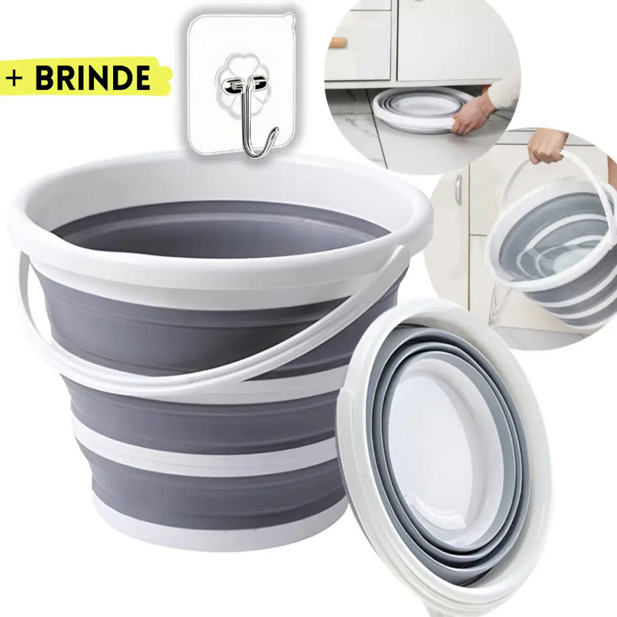
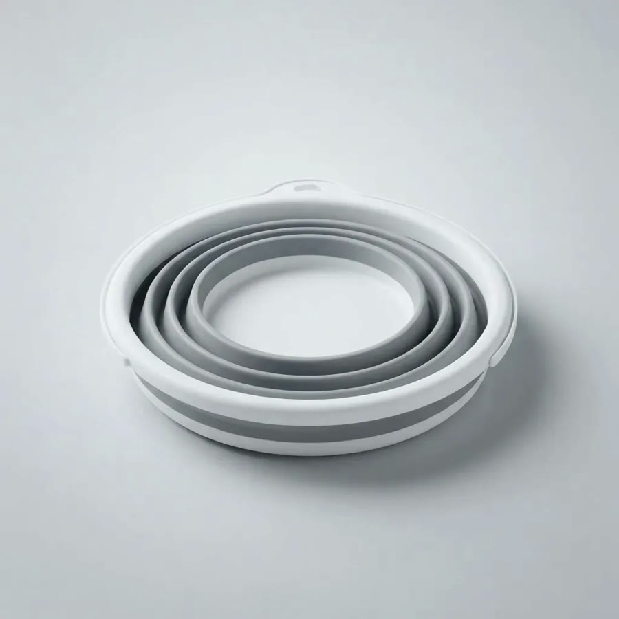
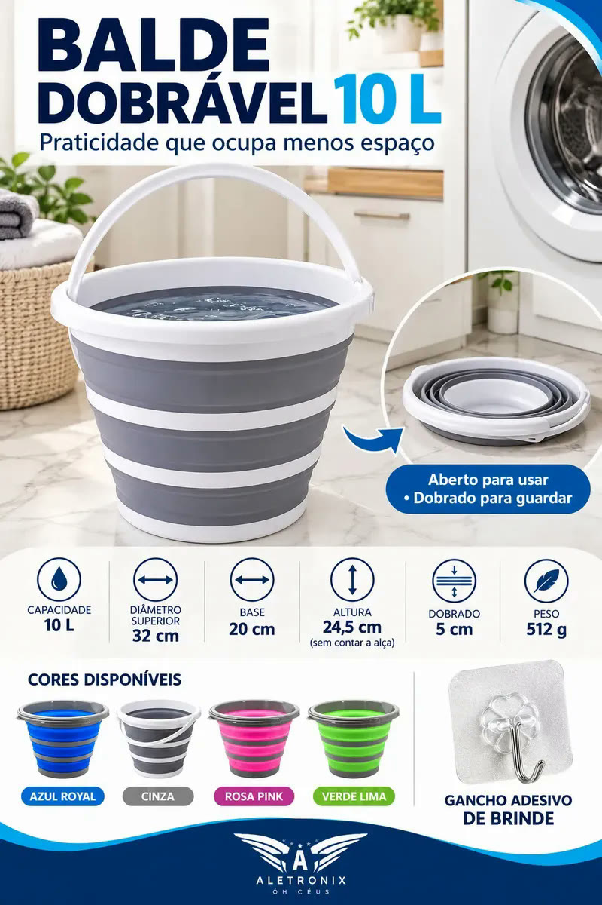
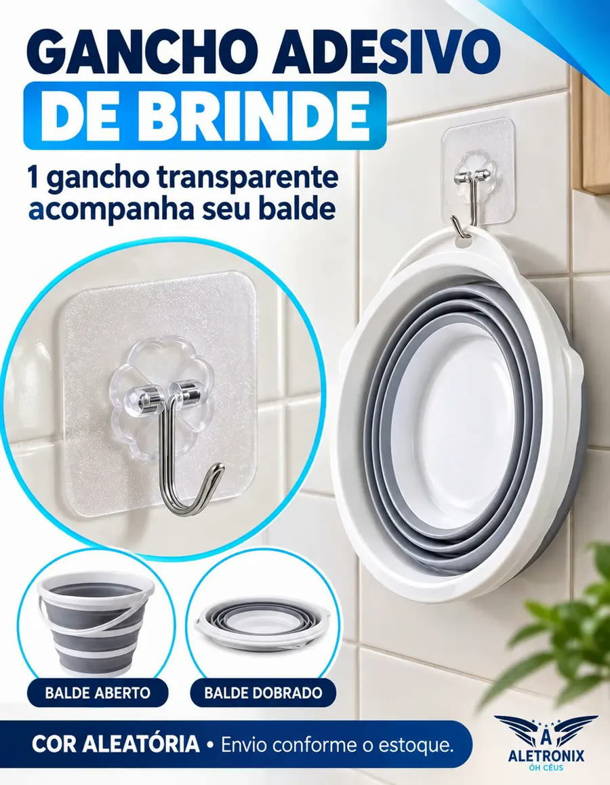
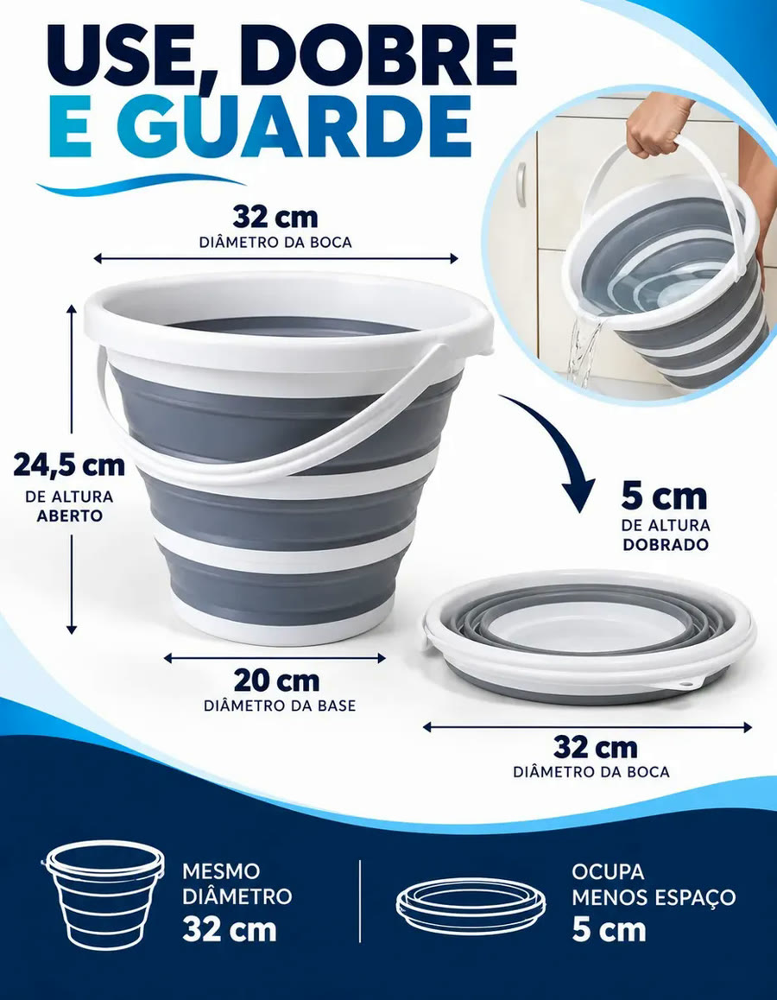
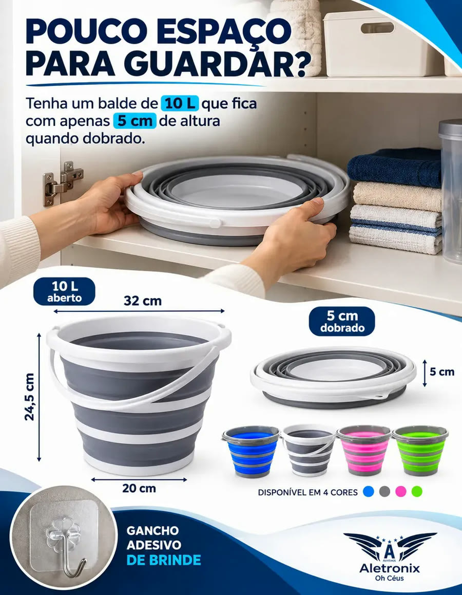
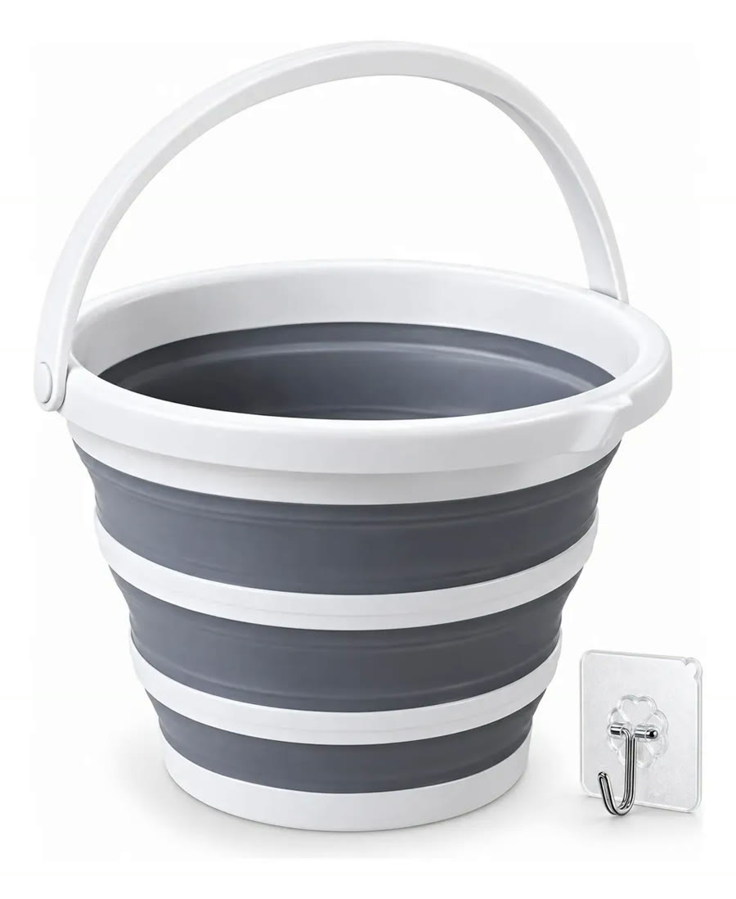

Achado nº 9
Balde retrátil de silicone de 10 litros







O que diz a página oficial do produto
- Balde de 10 litros que dobra e fica achatado para guardar
- Aberto, tem 24,5 cm de altura; segundo o anúncio, dobrado fica com 5 cm de altura
- Feito de plástico e silicone, com alça
- Segundo o anúncio, acompanha de brinde um gancho adesivo para pendurar o balde na parede
- Segundo o anúncio, a cor é enviada conforme o estoque
- No Mercado Livre, tem nota 4,9 com mais de 2.500 avaliações e mais de 10 mil vendidos
Link de afiliado: se você comprar por ele, a Achadaria pode receber uma comissão, sem custo extra para você. Preço, estoque e entrega são da loja e podem mudar; confira lá antes de comprar.